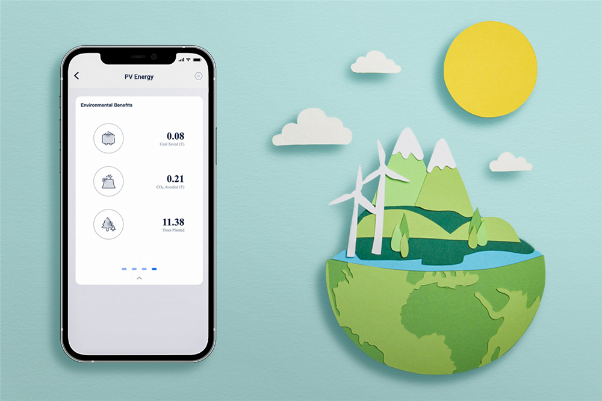

Expert Electrical Services for Hyde Park's Historic Homes
We provide specialized electrical services tailored to the unique needs of Hyde Park's vintage bungalows, Craftsman homes, and historic properties from the 1920s-1950s.
Historic Home Electrical Restoration
Hyde Park's beautiful vintage homes deserve electrical systems that match their quality and character. Our historic home electrical restoration services combine preservation expertise with modern safety standards.
- Knob-and-tube wiring replacement with period-sensitive installation
- Panel upgrades from 60-100amp to 200amp service
- Original fixture restoration and rewiring
- Code compliance work for home sales and insurance


Energy-Efficient Electrical Upgrades
Hyde Park residents care about sustainability and reducing their environmental impact. Our energy-efficient electrical services help you save money while protecting the environment, all while maintaining your home's vintage charm.
- LED lighting conversions that complement period fixtures
- Smart thermostat installation for older HVAC systems
- Whole-home energy monitoring systems
- Solar panel electrical integration and grid connections
Home Office & Study Electrical
Hyde Park's high concentration of professionals, academics, and remote workers demands reliable home office electrical solutions. We provide dedicated circuits and modern conveniences while respecting your home's character.
- Dedicated office circuits for reliable power
- USB outlets and charging stations
- Proper lighting for reading and work areas
- Ethernet wiring for high-speed internet


Smart Home Integration for Vintage Properties
Tech-savvy residents wanting modern convenience without compromising character. We specialize in discreet smart home installations that work seamlessly with period fixtures and historic architecture.
- Discreet smart home wiring and installation
- Smart lighting controls that work with period fixtures
- Wi-Fi optimization throughout older homes
- Security system integration with historic homes